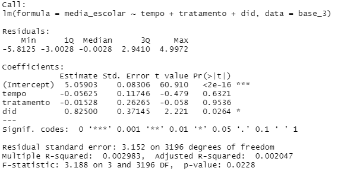

Indicador Média Escolar¶
A nota do Exame Nacional do Ensino Médio (Enem) do aluno é uma variável que pode ser medida diretamente de forma objetiva e constitui um bom parâmetro para avaliação do impacto de políticas na educação.
Em nossa simulação, a nota varia de 0 a 1000. Com base nisso, construímos uma base de dados simulada (base_2) constituída por 800 alunos, sendo 80 do grupo de tratamento, entre os anos de 2018 e 2019. Na simulação, o ano 2018 foi considerado como anterior à política pública e o ano de 2019 como posterior.
A primeira coluna da base representa o aluno (para cada qual foi atribuído um número de 1 a 800) e a segunda coluna é a nota obtida no Enem. Já a coluna tratamento registra “sim” para o aluno que tenha sido alvo da política pública, ou seja, que tenha recebido o apoio à participação em eventos de natureza científica, tecnológica e de inovação. Por fim, a última coluna registra o ano correspondente ao dado.
Sob o ponto de vista econométrico, o modelo diff-in-diff é o seguinte:
esforço docente = α + β1 · grupo_tratado i · pós_tratamento t + β2 · grupo_tratado i + + β3 · pós_tratamento i + ε i
Calculando o modelo no R¶
Inicialmente, precisamos informar ao R a localização da sua base de dados. A função “setwd” significa set working directory ou definir diretório de trabalho.O argumento dessa função deverá ser o local da pasta. Por exemplo, caso sua base de dados esteja localizada na pasta “C:/Users/Base/base_3”:
setwd("C:\\Users\\Base\\base_3")
Observe que deve ser utilizado dupla barra invertida em todos sistemas operacionais Windows.
O próximo passo é abrir a base de dados. Cada formato de arquivo(“xlsx”, “csv”, “xml”) possui uma forma distinta de abrir. Nesse guia o formato utilizado será “xlsx”, do aplicativo Excel da Microsoft.
1. Caso não possua, instale um pacote que permita abrir arquivos “xlsx”: .. code-block:: r
install.packages(“openxlsx”)
2. Carregue o pacote: .. code-block:: r
library(“openxlsx”)
3. Obtenha o nome do arquivo em que está contida sua base de dados. Se sua base de dados for o arquivo “Base_FAP.xlsx”, então passe o nome do arquivo após “xlsxFile” sem aspas e sem o formato “.xlsx”: .. code-block:: r
base = openxlsx::read.xlsx(xlsxFile = base_3)
Observe que, no canto superior direito, o campo “Environment” possui uma nova variável: “base_3”. Essa variável contêm a sua base de dados e com ela que o R irá interagir.
Definindo o início do Tratamento¶
Precisamos definir quando o nosso evento em questão começou. Conforme já citado, anos 2016 e 2017 foram considerados como anteriores à política pública e os anos 2018 e 2019 como posteriores, então:
base_3$tempo = ifelse(base_3$ano >= 2018, 1, 0)
Definindo Grupo de Tratamento e Controle¶
Numa regressão por diferenças existem 2 grupos distintos: os que receberam o tratamento e o grupo de controle. A coluna “tratamento” da base_3 registra “sim” para o professor que tenha sido alvo da política pública, ou seja, que tenha recebido o apoio à participação em eventos de natureza científica, tecnológica e de inovação e, caso contrário, registra “não”.
base_3$tratamento = ifelse(base_3$tratamento == "sim", 1, 0)
Desse modo, foi criada a coluna “tratamento”, que assume os valores: • 1 para as observações que foram tratadas; • 0 para as observações do grupo de controle.
Criando a variável Diferenças-em-Diferenças¶
A variável do modelo de regressão de diferenças-em-diferenças é uma interação entre as nossas colunas “tempo” e “tratados”. Para este guia, basta saber que essa interação irá criar uma variável, que chamaremos “did”, que representará o efeito do tratamento.
base_3$did = base_3$tempo * base_3$tratamento
Realizando a Regressão¶
Finalmente, tudo está pronto para realizar a regressão. Tendo o modelo econométrico em mãos, o R possui a função “lm” para realizar regressões. Os argumentos essenciais para essa função:
“fórmula” cujo formato é variável dependente ~ variáveis independentes. Os nomes das variáveis são as colunas que as respectivas se encontram;
“data” que deve ser preenchida com sua base de dados.
O comando no nosso exemplo é:
regressao = lm(nível_esforco ~ tempo + tratamento + did, data = base_3)
Interpretando os resultados¶
Para ter acesso aos resultados da regressão, utilizamos a função summary:
Nível de significância¶
O nível de significância irá dizer a probabilidade de que nossos resultados encontrados coincidam com a realidade. Uma forma de mensurar essa probabilidade é através do p-valor, última coluna da regressão Pr(>|t|). Quanto menor o p-valor, maior será a probabilidade de os resultados condizerem com a realidade. No geral, pode se dividir da seguinte forma:
em construção
Portanto, avaliando o p-valor da variável did, podemos classificá-la como significante. O próprio software R nos auxilia com essa classificação, bastando observar o número de asteriscos, “*” nesse nosso exemplo. Então, nesse caso, é possível evidenciar que houve impactos do apoio previsto no Edital nº 10/2019 na média escolar.
Sinal da variável¶
Na coluna Estimate estão os estimadores para cada variável do modelo, as quais, no caso, assumem os sinais positivos e negativos, dependendo da variável. Como nosso interesse é na variável did, ela possui sinal positivo. Isso quer dizer que a política teve efeitos positivos na variável estudada, ou seja, o apoio previsto no Edital nº 10/2019 contribui positivamente para um aumento na média escolar do aluno.
Mensurando o impacto¶
Na coluna Estimate estão os estimadores para cada variável do modelo. A interpretação do impacto da política pode ser realizada por meio da variável did da seguinte maneira: o fato de o aluno ter sido contemplado com o apoio à participação em eventos de natureza científica, tecnológica e de inovação eleva indicador de média escolar em 0,82500.